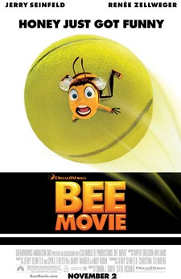

Plot
Barry B. Benson, an idealistic honey bee who has the ability to talk to humans, has recently graduated from college and is about to enter the hive's Honex Industries honey-making workforce with his best friend, Adam Flayman. Barry is initially excited to join the workforce, but his ambitious, insubordinate attitude emerges upon discovering that his choice of job will never change once picked. Later, the two bees run into a group of Pollen Jocks, bees who collect pollen from flowers outside the hive, and they offer to take Barry with them if he is "bee enough". While on his first pollen-gathering expedition in New York City, Barry gets lost in the rain, and ends up on the balcony of a human florist named Vanessa Bloome. Upon noticing Barry, Vanessa's boyfriend Ken attempts to squash him, but Vanessa gently catches and releases Barry outside the window, saving his life.
Barry later returns to express his gratitude to Vanessa, breaking the sacred rule that bees are not to communicate with humans. Barry and Vanessa develop a close friendship, bordering on attraction, and spend time together. When he and Vanessa are in the grocery store, Barry discovers that the humans have been stealing and eating the bees' honey for centuries. He decides to journey to Honey Farms, which supplies the grocery store with its honey. Incredulous at the poor treatment of the bees in the hive, including the use of bee smokers to incapacitate the colony, Barry decides to sue the human race to put an end to exploitation of the bees, with Vanessa agreeing to help.
Barry's mission attracts wide attention from bees and humans alike, with countless spectators attending the trial. Although Barry is up against tough defense attorney Layton T. Montgomery, the trial's first day goes well. That evening, Barry is having dinner with Vanessa when Ken shows up. Vanessa leaves the room, and Ken expresses to Barry that he hates the pair spending time together. When Barry leaves to use the restroom, Ken ambushes Barry and attempts to kill him, only for Vanessa to intervene and break up with Ken. The second day at the trial, Montgomery unleashes an unrepentant character assassination against the bees, leading a deeply offended Adam to sting him. Montgomery immediately exaggerates the stinging to make himself seem the victim of an assault while simultaneously tarnishing Adam. Adam's actions jeopardize the bees' credibility and his life, though he recovers. The third day, Barry wins the trial by exposing the jury to the torturous treatment of bees, particularly use of the smoker, and prevents humans from stealing honey from bees ever again. Having lost the trial, Montgomery cryptically warns Barry that a negative shift of nature is imminent.